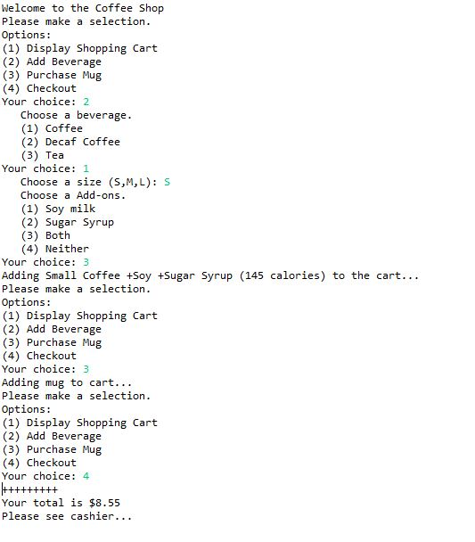

Throughout my time as a Computer Science Major, I have had much time to work on coding projects. Here are some of my favorites:
1.) Back in late 2019 when the election was around the corner, my professor gave us the assignment to be able to calculate the amount of electoral votes a party would get given the amount of Democratic/Republican votes. We made it so the process can be done sequentially or by using Fork/Join.

2.) Another project I made was a system where a coffee shop would be able to automate their sales through a computer cashier. The user inputs their order and the code does the rest.
3.) And third, a game of tenzi dice for the computer (with a leaderboard)